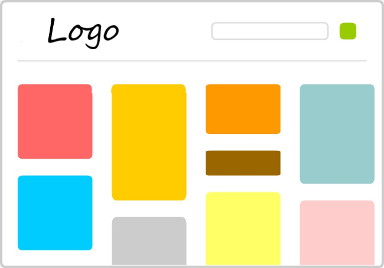
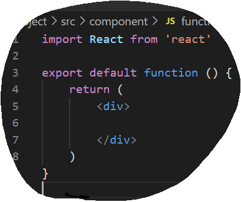

Components

In this chapter we'll have a closer look into Components and it's types.
As we have seen from the first chapter, React is a component-based library, but what exactly is a Component?
Let's find that out in this chapter.
In React a Component represents a part of the user experience.
In the above image, each block is a separate Component and can be reused again anywhere inside the application.
In React, we also use one more important Component, the 'App.js' Component as the "root" to contain all the other Components.
These Components are common JavaScript functions that are highly reusable, as they can be used with different properties, to display different information.
We have two Component types, Functional Component and Class Component.
Functional Component
Functional Components are just JavaScript functions. They receive properties, which is often refered to as props and return HTML which describes the UI.
Let's try to create a Functional Component.
1. Let's start by creating a JavaScript file by the name Function.js. Keep in mind to Capitalise the first letter of the file name.
2. The next step is to import React. Not just React, any Component we create that will be used in this function needs to imported.
import React from 'react'

In 'export default function' function denotes the name of the file.